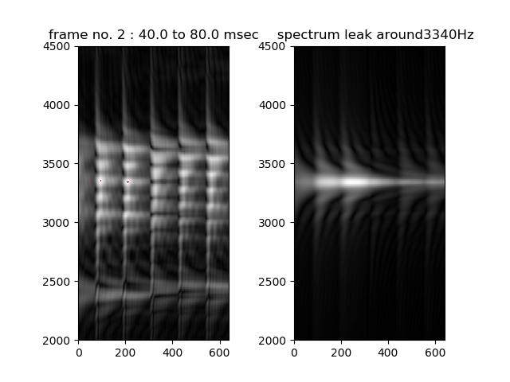

Voice BPF bank
Band Pass Filter bank and its application to voice sound analysis.
Processing band pass filters of which center frequency is from 2000Hz to 4500Hz step by 5Hz and shows gray scale image as output.
usage
python3 main1.py -w wav-file-name(mono,16bit) -f frame-number -r result_figure
There are 5 arguments.
-w specify input wav filename (mono,16bit)
-f specify the frame number to analyze. if negative value, all frames (whole length) are analyzed.
-r specify the directory name to save result image.
--en add this option to save result image instead of display.
--leak add this option to see spectrum leak caused by the envelop. (not available with --en)
Computed BPF bank output data will be save in BPF_out.
examples: all frames (whole length) analysis
vowel /i/ : python3 main1.py -w wav/i_1-16k.wav -f -1 -r result_i
fricative voice /si/ : python3 main1.py -w wav/si_1-16k.wav -f -1 -r result_si
examples: specified frame analysis
vowel /i/ : python3 main1.py -w wav/i_1-16k.wav -f 2 -r result_i
fricative voice /si/ : python3 main1.py -w wav/si_1-16k.wav -f 8 -r result_si

examples: see spectrum leak caused by the envelop
vowel /i/ : python3 main1.py -w wav/i_1-16k.wav -f 2 --leak

resampling tool
re-sampling wav to 16Khz sampling
cd wav
python3 resample1.py -w wav-file-name(mono,16bit)
Application
Please see subdirectory of Noise-Spectrum-Estimation to estimate noise source condition.
And also, see subdirectory of Vocal-Tube-Estimation to estimate vocal tract condition.
Document
For more information, please see related WEB or
same content in Japanese
License
MIT